Analiza rješenja · JOI Spring Camp 2026 · Dan 3
Trokutasta kiša
O ovom članku
Tekst je prijevod službene japanske prezentacije rješenja, preoblikovan u članak. Slajdovi su ugrađeni kao slike; natpis pod svakim slajdom je prijevod teksta na njemu. Dijelovi označeni kao trenerska napomena nisu u izvornoj prezentaciji — dodani su da popune korake koje slajdovi preskaču ili samo skiciraju.
Slajdovi
Zadatak i koordinate
izvorni slajdovi 1–5
-
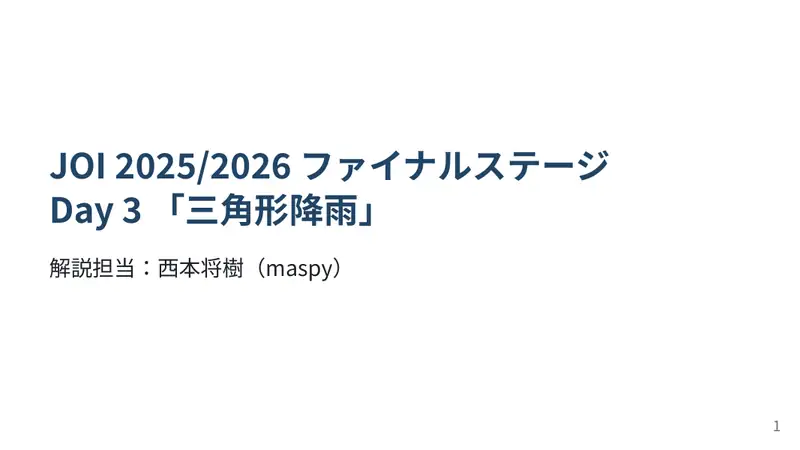
1Naslov; maspy. -
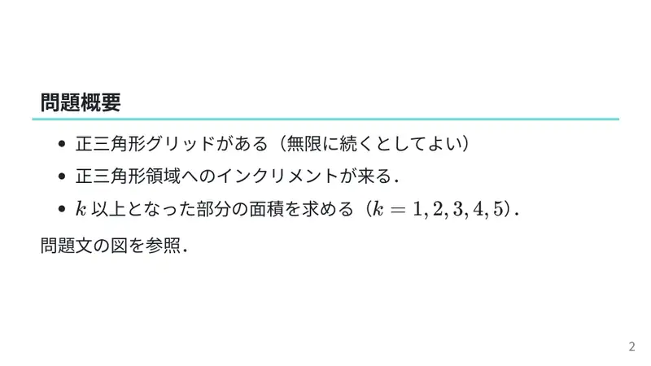
2Trokutasta mreža (može beskonačna); inkrementi na jednakostranične trokute; površina dijela s $\ge k$ za $k=1..5$. -
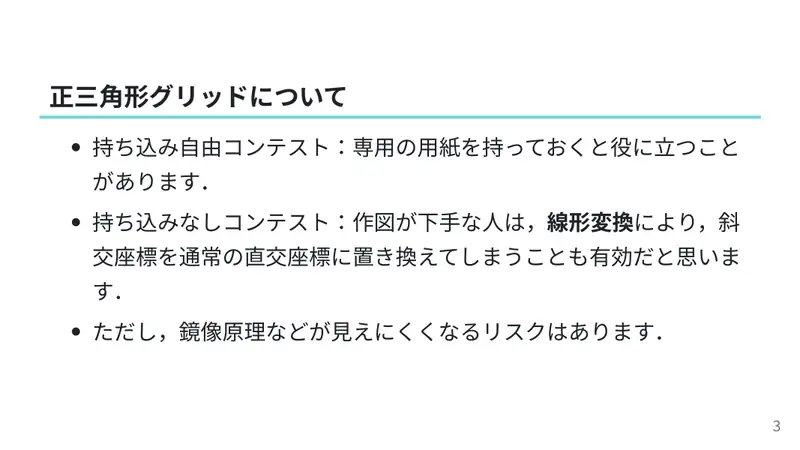
3Savjet: na natjecanju s dozvoljenim materijalima nosi trokutasti papir; inače linearno preslikaj u pravokutne koordinate (uz rizik da se simetrije slabije vide). -
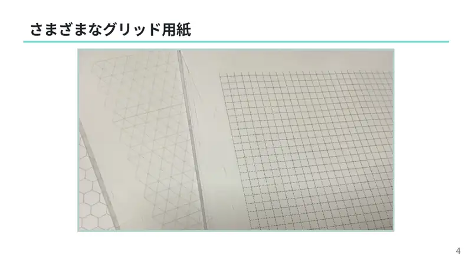
4Razne mrežne papire. -
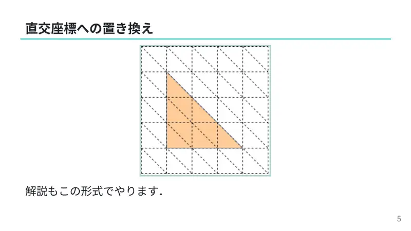
5Zamjena pravokutnim koordinatama — analiza dalje koristi taj oblik.
← → tipke ili klik na sliku
Podzadaci 1–4 21 bod
Koraci algoritma
Geometrija, grubo, kompresija
izvorni slajdovi 6–12
-
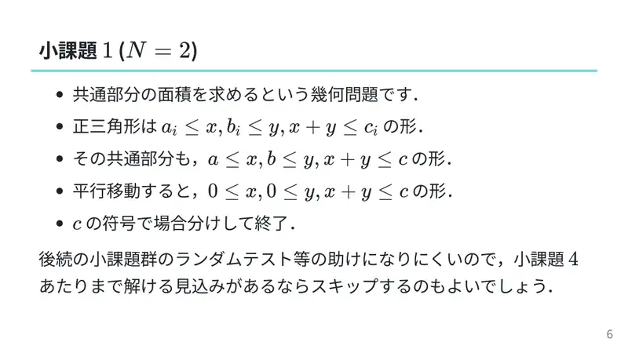
6$N=2$: trokuti $a_i\le x,b_i\le y,x+y\le c_i$; presjek istog oblika; translacijom $0\le x,0\le y,x+y\le c$; po predznaku $c$. Slabo pomaže za testiranje — preskoči ako ciljaš više. -
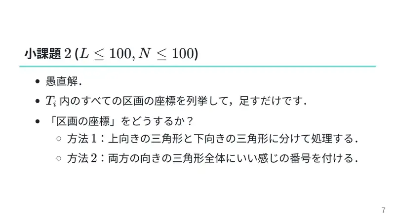
7$L,N\le100$: nabroji regije unutar $T_i$; koordinate regija — ili razdvoji gornje/donje trokute ili sve numeriraj. -
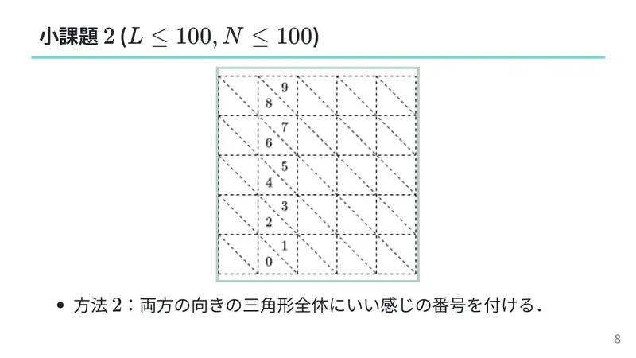
8Numeracija obaju orijentacija (slika). -
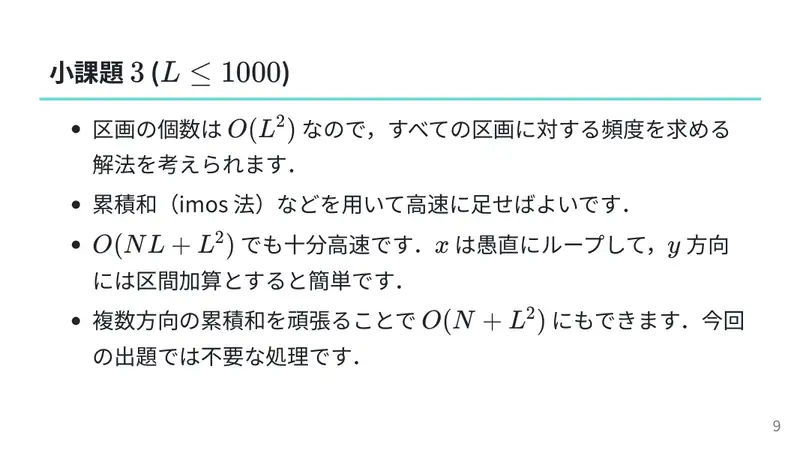
9$L\le1000$: $O(L^2)$ regija, frekvencije; imos/prefiksi; $O(NL+L^2)$ dovoljno (po $x$ petlja, po $y$ intervalno dodavanje); više smjerova prefiksa daje $O(N+L^2)$, nepotrebno. -
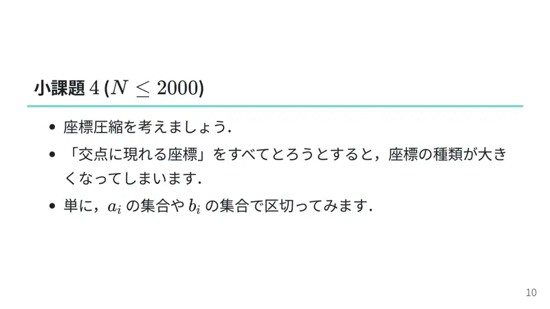
10$N\le2000$: kompresija — sve presječne koordinate su previše; reži samo po skupovima $a_i$ i $b_i$. -
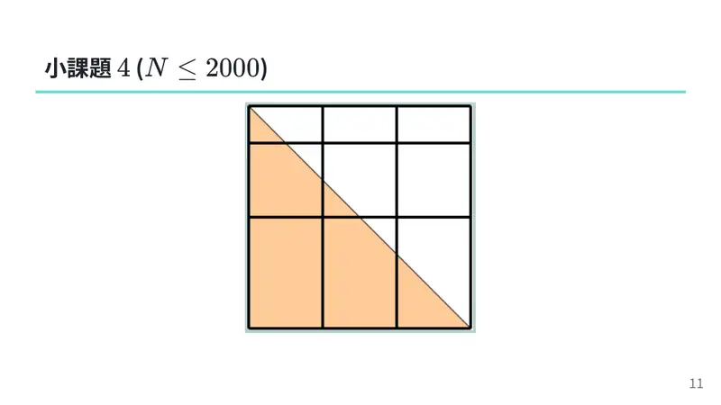
11Slika. -
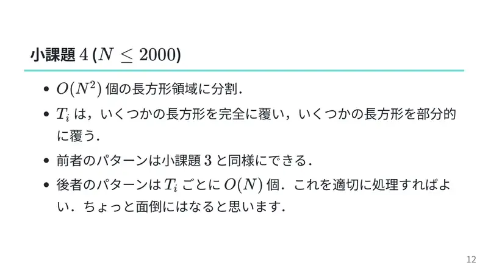
12$O(N^2)$ pravokutnika; $T_i$ potpuno pokriva neke (kao podzadatak 3) i djelomično $O(N)$ po trokutu — obradi ih; malo mučno.
← → tipke ili klik na sliku
$X_i=0$ 20 bodova
Koraci algoritma
Zajednička hipotenuza
izvorni slajdovi 13–15
-
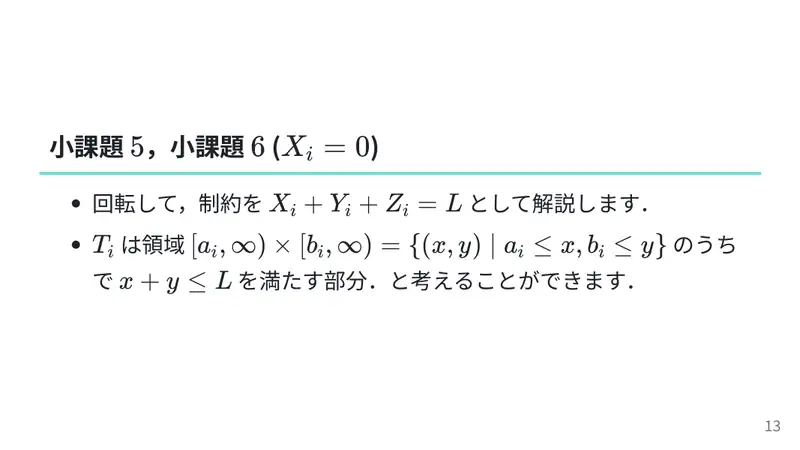
13Rotiraj tako da je $X_i+Y_i+Z_i=L$: $T_i=[a_i,\infty)\times[b_i,\infty)$ presječen s $x+y\le L$. -
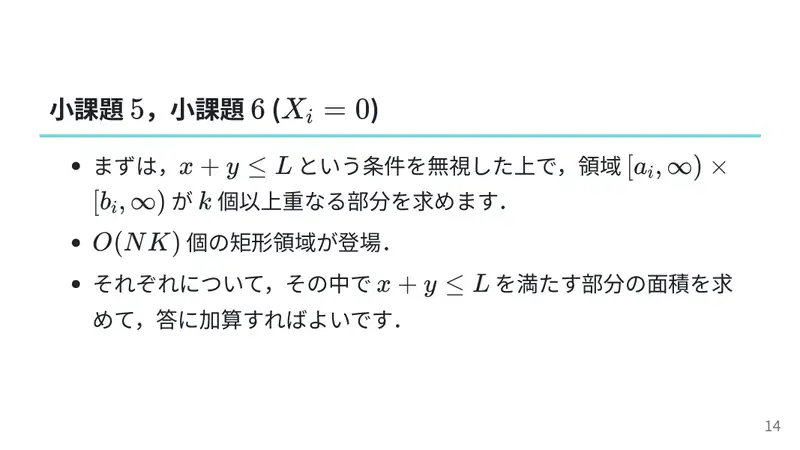
14Ignoriraj $x+y\le L$: dio s $\ge k$ kvadranata je $O(NK)$ pravokutnika; za svaki dodaj površinu dijela s $x+y\le L$. -
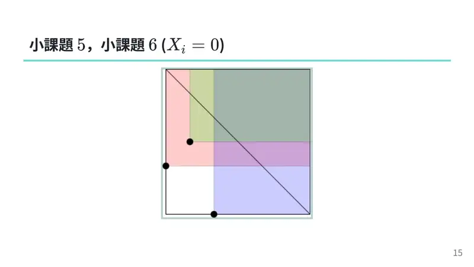
15Slika.
← → tipke ili klik na sliku
Puno rješenje 100 bodova
Koraci algoritma
Scan-line po x+y=c
izvorni slajdovi 16–22
-
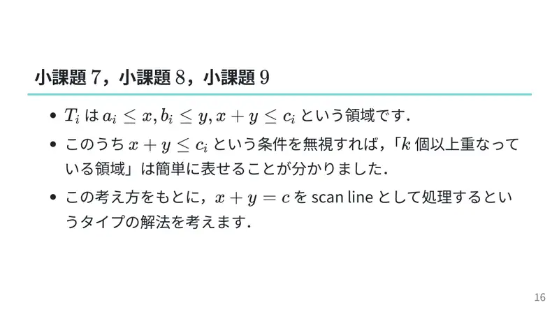
16$T_i=\{a_i\le x,b_i\le y,x+y\le c_i\}$; bez uvjeta $x+y\le c_i$ razina $\ge k$ je jednostavna ⇒ obradi $x+y=c$ kao scan-line. -
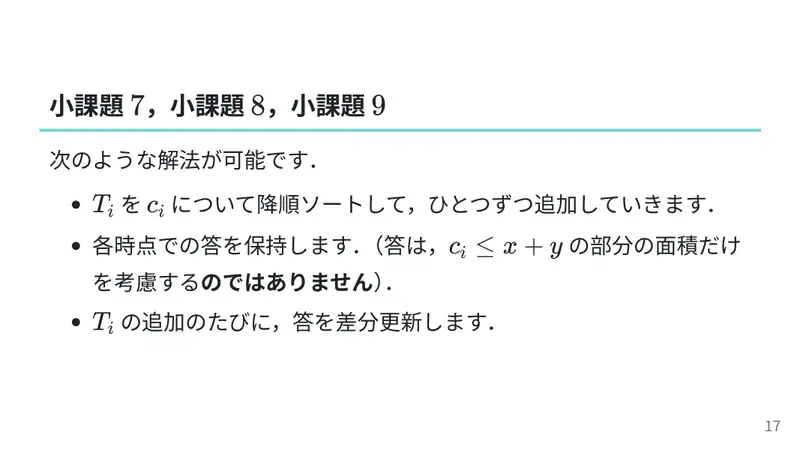
17Sortiraj po $c_i$ padajuće, dodaj jedan po jedan, održavaj odgovor (ne samo dio $c_i\le x+y$); pri svakom dodavanju razlikovno ažuriraj. -
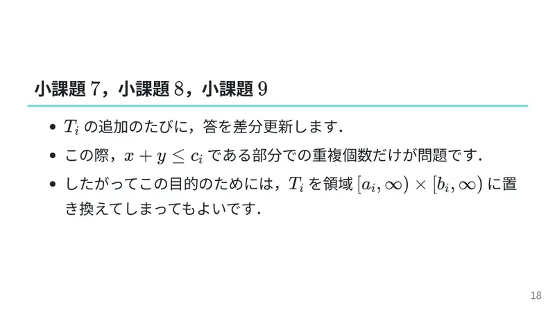
18Bitna je samo višestrukost u dijelu $x+y\le c_i$ ⇒ tamo $T_j$ smiješ zamijeniti kvadrantom $[a_j,\infty)\times[b_j,\infty)$. -
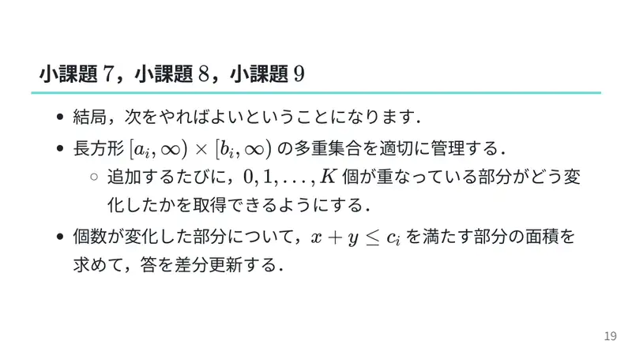
19Dakle: održavaj multiskup kvadranata; pri dodavanju dohvati kako se mijenjaju dijelovi s $0,1,\dots,K$ preklapanja; za promijenjene dijelove dodaj površinu s $x+y\le c_i$. -
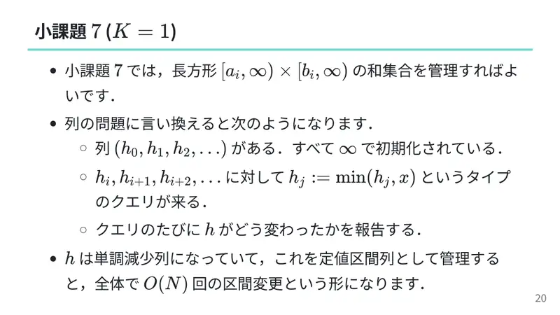
20$K=1$: unija kvadranata; kao niz $h_0,h_1,\dots=\infty$ i upit $h_j\gets\min(h_j,x)$ za $j\ge i$ uz izvještaj o promjeni; $h$ je nerastući ⇒ konstantni segmenti, ukupno $O(N)$ promjena. -
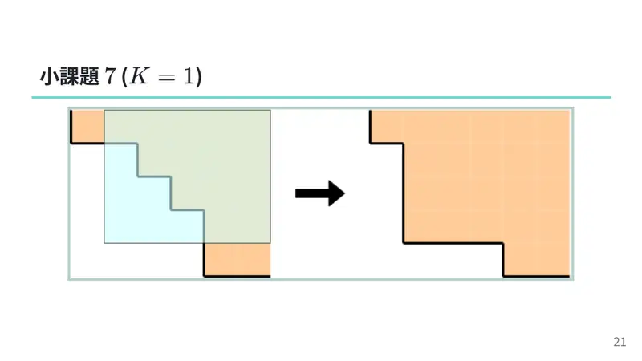
21Slika. -
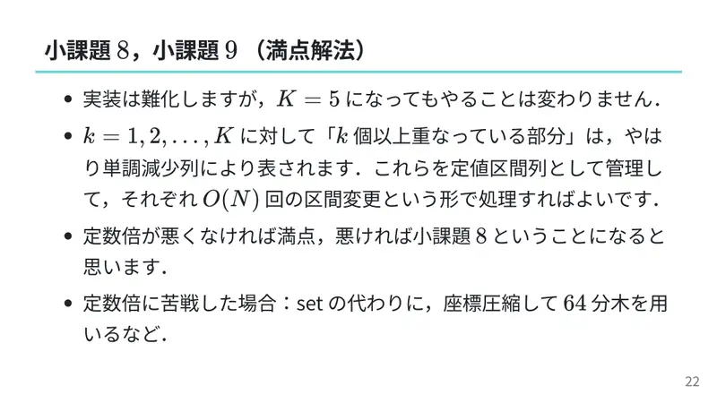
22$K=5$: isto, razine $k=1..K$ su nerastući nizovi; segmentni prikaz, $O(N)$ promjena po razini; dobra konstanta ⇒ 100, inače podzadatak 8; umjesto seta kompresija + 64-arno stablo.
← → tipke ili klik na sliku
Sažetak
- Pravokutne koordinate: trokut $=\{a\le x,b\le y,x+y\le c\}$; regije $=2\times$ površina.
- Scan-line po $c$ padajuće pretvara trokute u kvadrante; razine pokrivenosti su stepenice s $O(N)$ promjena svaka.